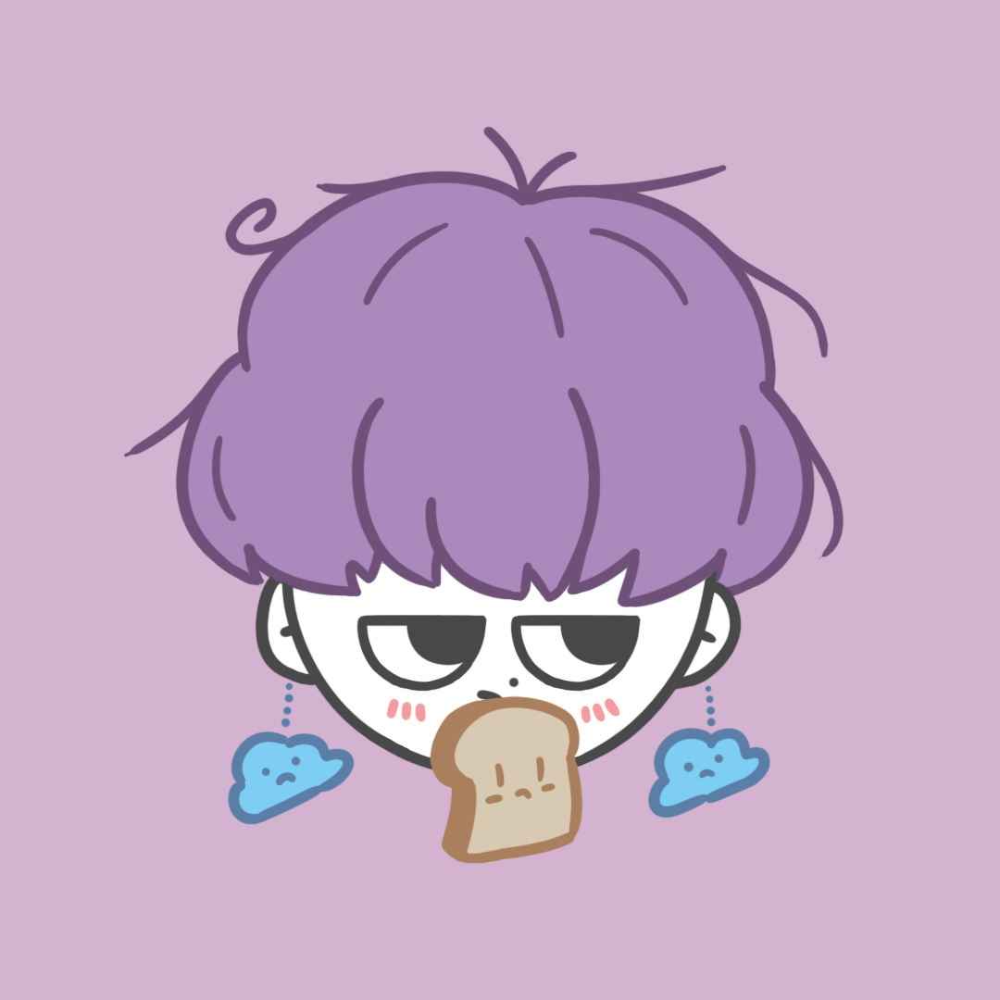
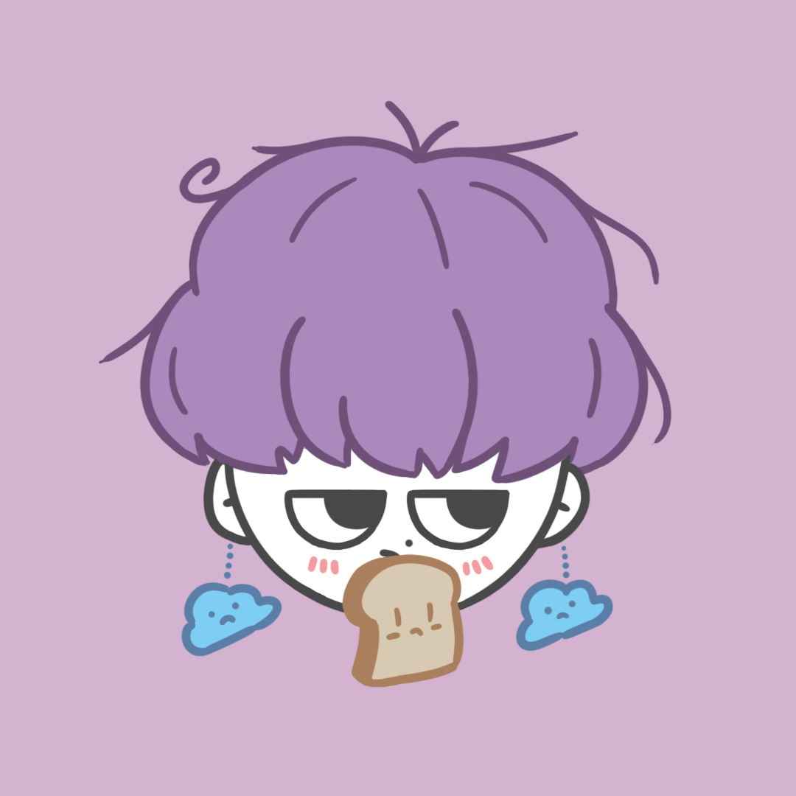

Uh_2_X._X
[어이없음]
It's me, Uh_2_X._X
자세히 알아보려면 밑으로 스크롤

Uh_2_X._X
[어이없음]
이 사람이 🪖에서 돌아오기까지
계산 중...
다섯 살 때부터 지금까지 끊임없이 좋아했던 것이에요! 각 열차마다 매력이 엄청나죠..! 😊 옛날 차 새로운 차 모두 좋아한답니다 😌
때는 중학교 1학년.. 캐치마인드를 하기 위해 구매한 타블렛으로 할 수 있는 생산적인 것이 무엇이 있을까.. 하고 고민하다가 그림을 그리게 됐어요!
실력이 썩 좋은 편은 아니지만.. 의외로 좋아해주시는 분들이 많아서(!) 제 그림을 좋아해주시는 분들에게 정말 고맙게 생각하면서 가능한 꾸준히 그리고있어요! 🥹 보통은 그리고 싶은 대로 그리고.. 선물도 가끔 해드린답니다..ㅎㅎ
각종 IT 기기(홍대병 다량 함유) 및 테크에 관심이 있어요! 디자인이 예쁜 기기들을 좋아해요.
프론트엔드도 쬐끔 만질 줄 안답니다..!
다만 실력은 보장 못하고 그냥 할 줄 안다! 주변에서 칭찬받는다 수준..🥲
+ 제가 만든 타자연습은 모르는 새에 모르는 컴퓨터 강사가 널리 퍼트리고 있더라구요ㅋㅋ..
닌텐도 게임, 특히나 모노리스 소프트와 노가미 히사시가 맡은 게임들(젤다, 동숲, 스플래툰, etc..)을 좋아해요. 친구 코드는 언제든지 드릴 수 있어요! 사정 상 받는 데에는 시간이 좀 걸릴거에요..! 🥺
저를 어디서 봤다고.. 다짜고짜 초면에 반말을 하시는 분들이 계셔서.. 그 뒤로는 별로 좋아하지 않고 있어요. 친하고 나이만 비슷하면 언제든 반말을 상의할 수 있어요! 😇
NO MORE PASSION.